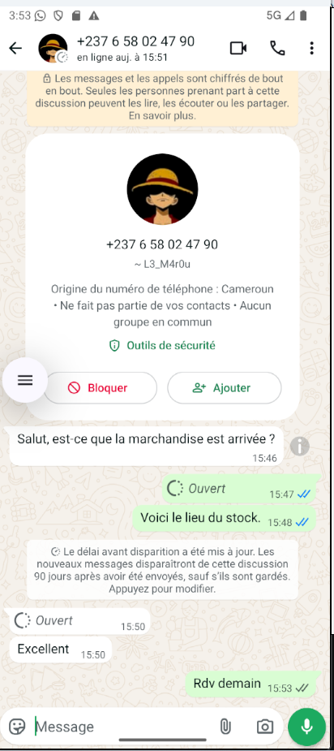
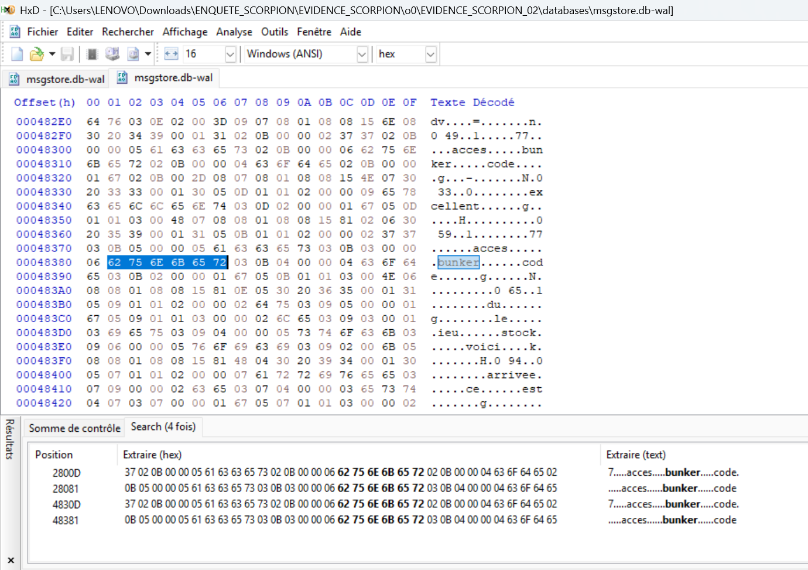
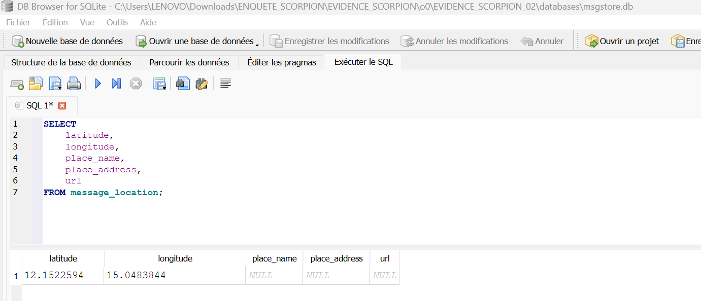

🚀 Introduction : Le mythe de la donnée effacée
En cybersécurité, nous répétons souvent : "Ce qui est sur Internet reste sur Internet". Mais qu'en est-il de ce qui est sur votre téléphone ? Une croyance tenace persiste chez les utilisateurs : la fonction "Supprimer pour moi" ou "Supprimer pour tous" de WhatsApp effacerait définitivement les preuves. C'est faux.
Dans le cadre de mes recherches en forensic mobile, j'ai récemment conduit une analyse approfondie de la dernière version de WhatsApp (Décembre 2025) sur un environnement Android 16. L'objectif était de confronter la théorie à la réalité d'un accès privilégié (Root).
Au travers de l'"Opération Scorpion", une simulation d'enquête menée en laboratoire, cet article démontre comment un expert forensique peut exhumer un message sensible ("CODE_BUNKER") supprimé par un suspect, en analysant les traces résiduelles des bases de données SQLite.
Note technique : Pour ceux qui souhaitent reproduire ce laboratoire et apprendre à rooter leur propre téléphone pour l'analyse, je recommande de suivre cette excellente vidéo qui détaille la procédure.
🕵️♂️ 1. La Scène de Crime (Simulation)
Pour cet audit, j'ai simulé une conversation criminelle contenant un code sensible : "CODE_BUNKER_77". Quelques secondes après l'envoi, le suspect supprime le message via l'option "Supprimer pour moi".
Sur l'interface utilisateur, la preuve a disparu, laissant penser à une impasse pour l'enquêteur non spécialisé.
Figure 1 : La conversation semble anodine. Le message contenant le code sensible a été supprimé.
⚙️ 2. L'Acquisition "Live" (La stratégie Root)
Sur un téléphone non rooté, nous sommes forcés d'extraire des sauvegardes chiffrées (.crypt16) et de tenter de casser le chiffrement. Mais avec le Root, la donne change. WhatsApp doit lire ses messages en clair pour fonctionner. Le fichier de base de données active se trouve dans la partition système protégée.
Pour cette investigation, une élévation de privilèges a été nécessaire pour contourner la Sandbox
d'Android et accéder au dossier /data/data/.
su
# Le prompt passe de $ à # (indiquant l'accès Root SuperUtilisateur)
Figure 2 : Obtention des droits Root (su) via le pont ADB.
Une fois l'accès obtenu, l'erreur classique est de ne copier que le fichier principal
msgstore.db. Pour une analyse forensique complète, il est impératif de sécuriser le
Trio SQLite pour garantir l'intégrité des données volatiles.
# Copie de la base principale ET des journaux WAL (Crucial !)
cp /data/data/com.whatsapp/databases/msgstore.db /sdcard/EVIDENCE_SCORPION/
cp /data/data/com.whatsapp/databases/msgstore.db-wal /sdcard/EVIDENCE_SCORPION/
cp /data/data/com.whatsapp/databases/msgstore.db-shm /sdcard/EVIDENCE_SCORPION/
# Vérification de la taille du fichier WAL
ls -l /sdcard/EVIDENCE_SCORPION/
Figure 3 : Sécurisation des preuves. Notez la taille du fichier msgstore.db-wal (506 Ko).
🔍 3. L'Analyse Logique et le "Message Fantôme"
En ouvrant le fichier principal msgstore.db avec un logiciel d'analyse SQL standard
(comme DB Browser), les résultats semblent confirmer la suppression.
La requête SQL exécutée sur la table message montre bien l'horodatage de l'échange,
mais le contenu du message cible est marqué comme NULL (vide). Le moteur SQL obéit à
l'instruction de suppression enregistrée dans la base.
Figure 4 : La requête SQL montre une entrée dont le contenu est NULL. Pour un enquêteur standard, la preuve n'existe plus.
💡 4. La Révélation (Forensic Carving)
C'est ici que réside la valeur ajoutée de l'expertise. SQLite utilise un mécanisme de journalisation appelé Write-Ahead Log (WAL). Les nouvelles données sont d'abord écrites dans ce fichier temporaire avant d'être fusionnées.
Tant que cette fusion (appelée "Checkpoint") n'a pas eu lieu, le texte original persiste
physiquement sur le disque. En effectuant une analyse hexadécimale brute (Raw Hex
Dump) du fichier msgstore.db-wal, nous contournons la logique de base de données.
Le résultat est sans appel : le message supprimé est retrouvé en clair.
Figure 5 : L'analyse bas niveau du fichier WAL révèle la persistance des données. Le message "CODE_BUNKER" est retrouvé en clair.
🌐 5. Exploitation Avancée des Métadonnées
L'analyse forensique ne s'arrête pas à la récupération du texte. L'examen structurel des 266 tables de la base de données a permis d'extraire des éléments de contexte critiques qui permettent de lier les faits à des individus et des lieux précis.
A. Attribution et Profilage (Table wa_contacts)
Lier un identifiant technique à une personne réelle est crucial. En analysant la table
wa_contacts, nous avons pu faire le lien entre le JID (Jabber ID) interne et le numéro
de téléphone réel.
Comme le montre la capture ci-dessous, le JID 237658... est formellement identifié. De
plus, nous avons extrait le statut personnalisé du suspect : "L3 h4ck3r 13 plus n00b du
Tch4d", un élément précieux pour le profilage psychologique.
Figure 6 : Désanonymisation du contact et récupération du statut via la table wa_contacts.
B. La Persistance des "Vue Unique" (ViewOnce)
Contrairement à la promesse de confidentialité totale, les médias éphémères laissent des traces
durables. L'analyse de la table message_media révèle que WhatsApp conserve les
métadonnées des fichiers même après leur suppression de l'interface.
Nous avons identifié des chemins de fichiers explicites contenant /ViewOnce/ (voir
ligne 1 et 2 de la capture). Les métadonnées incluent la taille (794 Ko), le type MIME (video/mp4)
et la date d'envoi, prouvant l'existence et la nature de l'échange multimédia.
Figure 7 : Preuves de médias "Vue Unique" (ViewOnce) persistantes dans la base de données.
C. Géolocalisation Précise (Table message_location)
L'élément le plus incriminant se trouve dans la table message_location. Si le suspect a
partagé sa position (même brièvement), les coordonnées GPS brutes sont stockées.
Dans ce laboratoire, nous avons extrait les coordonnées suivantes : Latitude 12.1522594, Longitude 15.0483844. Ces données confirment la présence du suspect dans une zone précise de N'Djamena au moment des faits.
Figure 8 : Extraction de coordonnées GPS confirmant la localisation à N'Djamena.
📝 Conclusion
Cette démonstration technique souligne deux réalités fondamentales pour la sécurité nationale et la justice :
Premièrement, la suppression est une illusion numérique. En informatique forensique, "supprimer" signifie souvent "cacher" ou "marquer pour écrasement futur", et non "détruire instantanément".
Deuxièmement, la puissance de l'accès Root est indéniable. Une fois qu'un expert a un accès physique et Root à un terminal, le chiffrement de l'application (au repos) ne suffit plus à protéger les secrets. L'expertise forensique mobile n'est plus une option, c'est une nécessité stratégique.